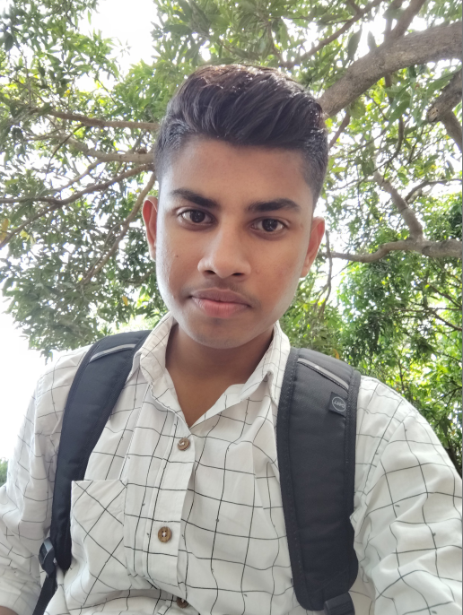

Priyanshu Katariya ░░▒

Full Stack Web Developer
Education
- 10th(High School) : 60%
- 12th(Intermediate) : 80%
- Bachelors in Computer Applications (BCA) : 8.71 CGPA
Skills
- Full Stack Web Development(MERN)
- Java+DSA
- Python, (OOPS)Object Oriented Programming System, (DBMS)Data Base Management System, (CN)Computer Network, (OS)Operating System etc.
Projects
- Project 1 : Developed an interactive console-based quiz game inspired by Kaun Banega Crorepati using Python. This project includes multiple-choice questions, dynamic reward progression and answer validation logic. It demonstrates control flow, list operations, input handling and basic user interaction in Python programming. A detailed post featuring the project demo is also available on my profile timeline.
- Project 2 : Built a text-based restaurant management system using Python. The application allows users to place multiple food orders, calculate totals with GST and discounts and display a formatted bill. It demonstrates use of dictionaries, loops, conditionals and user input handling in a real-world scenario. A detailed post featuring the project demo is also available on my profile timeline.
Certifications
- Certificate of Participation in 12-hrs University Hackathon : developed an AI-chatbot within a 12-hrs implementing natural language processing. Demonstrated strong teamwork, problem-solving etc.
- Certificate of Participation in University Ideathon : Designed a smart study chair that tracks sitting time, sets study goals, monitor breaks and provides notifications to enhance productivity and time management.
- Certificate of Participation in University Debate Competition : Engaged in a debate compeetition on "National Science Day" at Vardhman Auditorium, showcasing analytical and public speaking skills